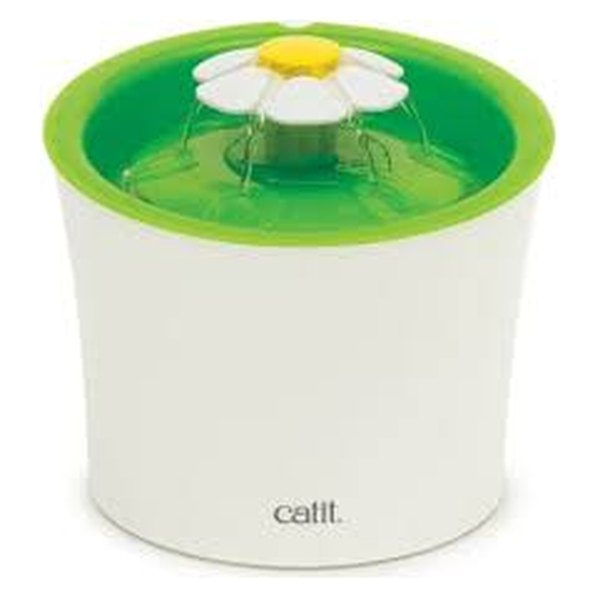
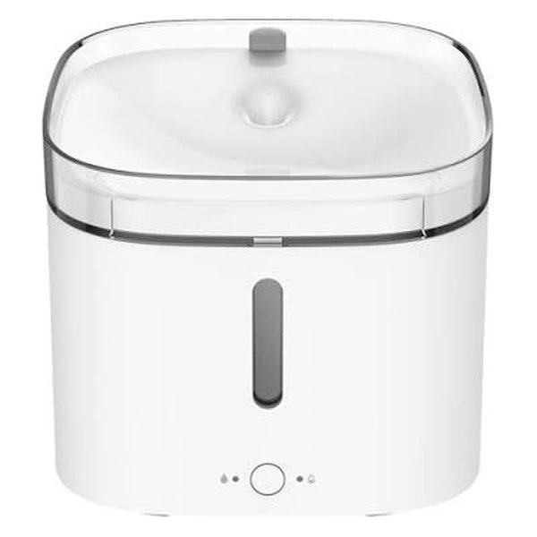
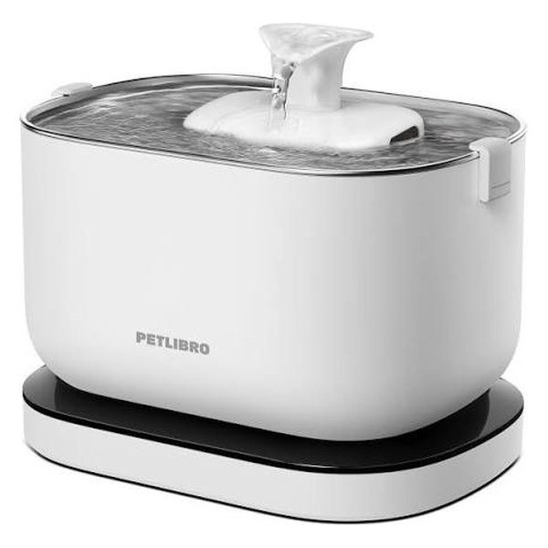

Fuentes para gatos: las mejores para que beba más
Muchos gatos beben poco. Una fuente con agua en movimiento puede ayudar: comparamos tres de las más populares en Amazon.es.
¿Con prisa? La Xiaomi Smart Pet Fountain es la más equilibrada
Filtrado en cuatro etapas, control desde el móvil y un tamaño compacto que cabe en cualquier rincón.
Comparativa rápida
| Modelo | Capacidad | App | Filtrado | Ideal para |
|---|---|---|---|---|
| Catit Flower 3 L | 3 L | No | Triple acción | Empezar sin complicaciones |
| Xiaomi Smart Pet Fountain Recomendada | 2 L | Sí | 4 etapas | La mayoría de gatos |
| PETLIBRO Dockstream | 2,5 L | Sí + estadísticas | Múltiple | Vigilar cuánto bebe |
Datos según la ficha de cada producto en Amazon.es y del fabricante. Pulsa en cada botón para ver el precio y la disponibilidad actual.
Análisis de cada modelo
Catit Flower Fountain 3 L

Una de las fuentes para gatos más populares. Su forma de flor permite que el agua salga de distintas maneras para que tu gato elija cómo prefiere beber, y el filtro de triple acción ayuda a mantener el agua limpia.
A favor
- Precio contenido y marca especializada en gatos
- Depósito de 3 litros
- Filtros de recambio fáciles de encontrar
En contra
- Sin app ni avisos de nivel de agua
- Hay que limpiarla con regularidad para evitar la cal
Xiaomi Smart Pet Fountain

Fuente inteligente con filtrado en cuatro etapas que se conecta a la app Xiaomi Home, así puedes controlarla desde el móvil. Pensada para gatos y perros pequeños o medianos.
A favor
- Control desde la app
- Filtrado en cuatro etapas
- Diseño compacto y discreto
En contra
- Depósito de 2 L: hay que rellenar más a menudo
- No es la mejor para perros grandes
PETLIBRO Dockstream (con app)

Además de filtrar el agua, te muestra en la app cuánto bebe tu mascota, algo muy útil si tu veterinario te ha pedido vigilar su hidratación. El fabricante la describe como ultrasilenciosa, ideal para gatos asustadizos o para dormitorios.
A favor
- Estadísticas de cuánta agua bebe tu mascota
- Funcionamiento muy silencioso
- Filtrado múltiple
En contra
- Solo WiFi de 2,4 GHz
- Más cara que una fuente básica
Qué mirar antes de comprar
Si tu gato bebe poco, antes de comprar lee nuestra guía sobre por qué los gatos beben poca agua y cómo ayudarles.
- Capacidad: Para un gato suele bastar con 2 L; si tienes varias mascotas o pasas muchas horas fuera, mejor 3 L o más.
- Ruido: Si tu gato es asustadizo o la fuente va en un dormitorio, prioriza los modelos que destacan por ser silenciosos.
- Filtros: Comprueba que los recambios sean fáciles de encontrar y no muy caros: los cambiarás a menudo.
- Material: El acero inoxidable y la cerámica son más fáciles de mantener limpios que el plástico.
- App y avisos: Una app que avisa del nivel de agua o del cambio de filtro es cómoda, pero no imprescindible.
- Colocación: Ponla en un lugar tranquilo, lejos del arenero y, a ser posible, separada de la comida.
Preguntas frecuentes
¿Las fuentes hacen que los gatos beban más?
A muchos gatos les atrae el agua en movimiento, y algunos beben de una fuente de forma constante mientras ignoran un cuenco normal. No funciona con todos, pero es una de las recomendaciones más habituales para gatos que beben poco.
¿Cada cuánto hay que limpiar la fuente?
Conviene cambiar el agua y enjuagar la fuente cada pocos días, hacer una limpieza a fondo (incluida la bomba) de forma periódica y cambiar el filtro según lo que indique el fabricante. Tienes el calendario completo y los pasos en nuestra guía cómo limpiar la fuente y cada cuánto cambiar el filtro.
¿Hacen ruido?
Todas llevan una pequeña bomba que produce algo de sonido, sobre todo si el nivel de agua baja. Mantenerla llena y limpia ayuda a que sea más silenciosa.
¿Sirven también para perros?
Sí, para perros pequeños y medianos. Para perros grandes busca un depósito más grande, porque beben mucha más cantidad.
Cómo hacemos nuestras comparativas
Seleccionamos modelos disponibles en Amazon.es y los comparamos a partir de sus fichas técnicas oficiales y de la información publicada por cada fabricante. No recibimos productos gratis ni pagos de las marcas por aparecer aquí.